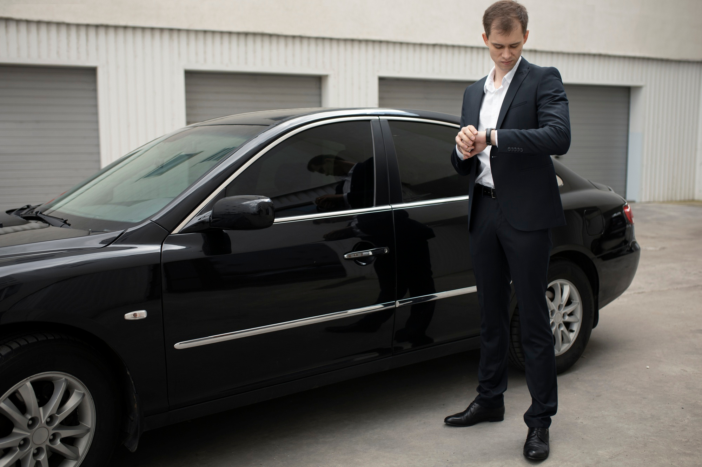
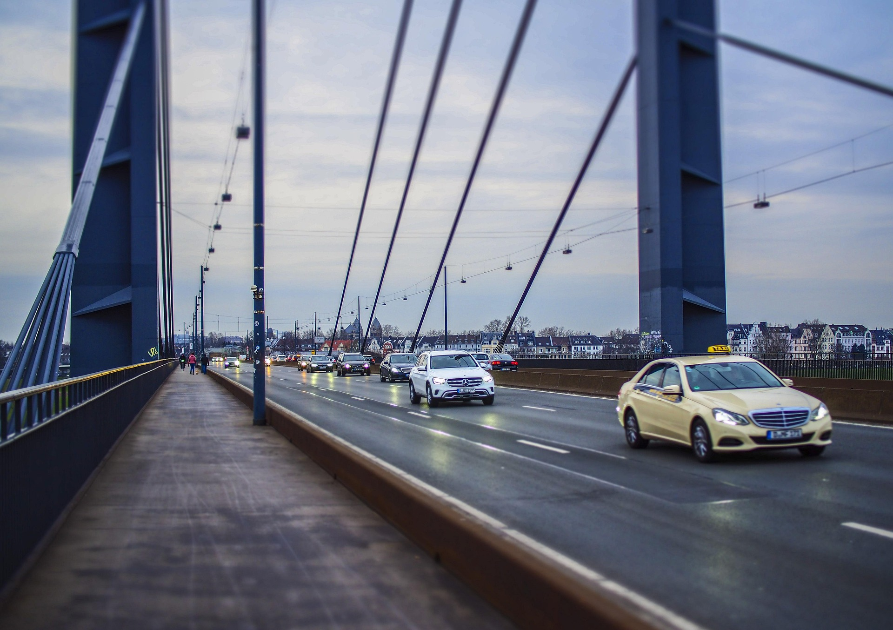
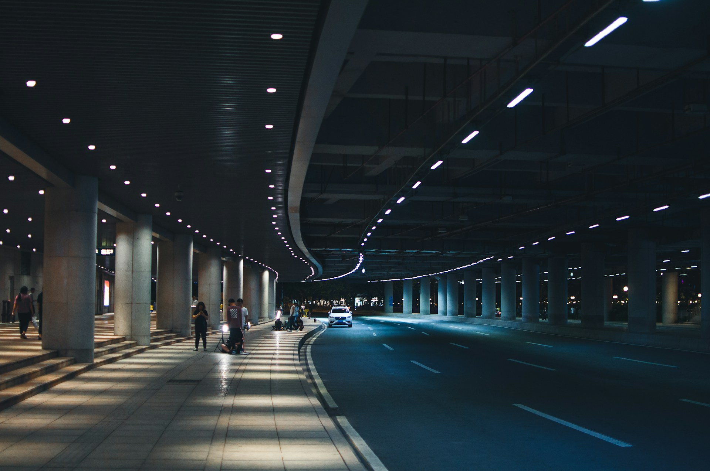
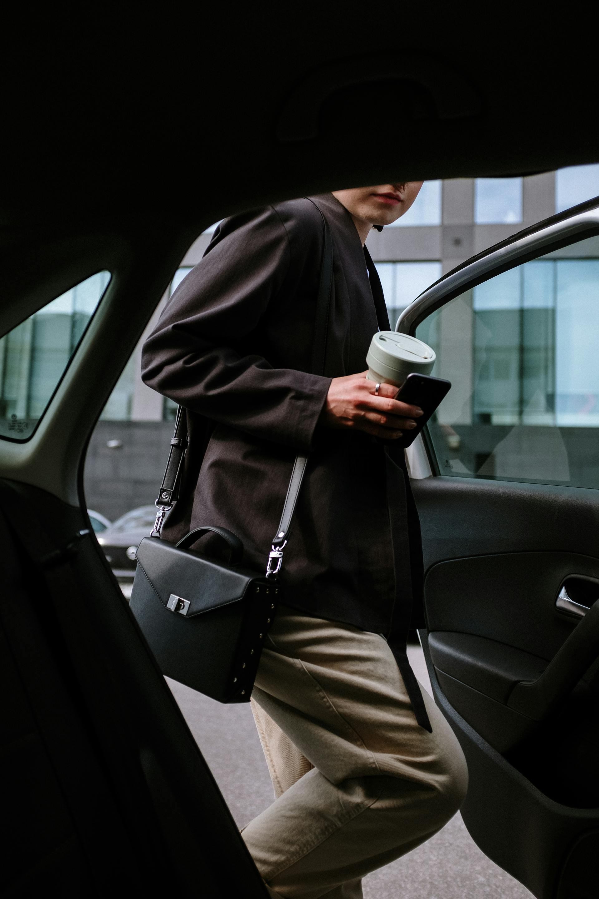
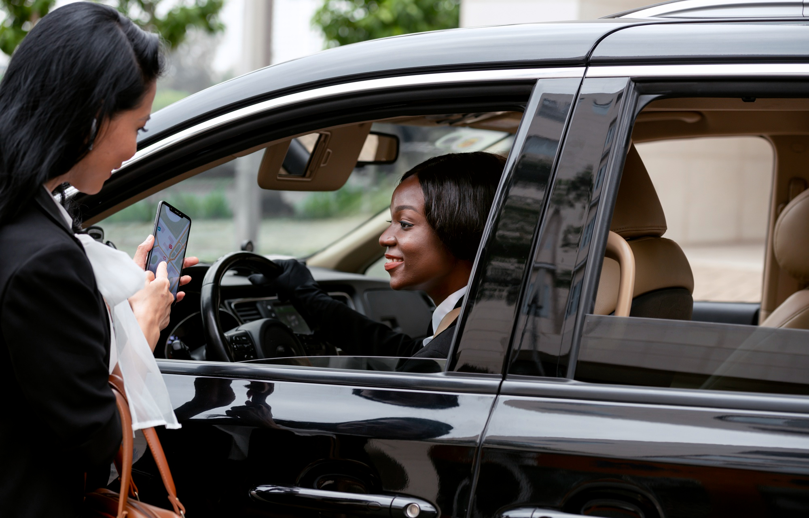

Depuis des dizaines d'années l'entreprise Taxi Fontainebleau a su prouver à tous ses clients son sérieux et son professionnalisme. En plus des nombreux services mises à votre disposition, nos chauffeurs peuvent vous proposer des services complémentaires, pour faire de votre trajet un véritable moment de plaisir.
Pour une course tout confort avec un chauffeur personnel qui aura pour unique but votre satisfaction, faites appel à nos chauffeurs ! Chacun d'entre eux disposent de son permis de conduire bien évidemment, mais conduit avec prudence tout en respectant votre itinéraires et les limitations de vitesse qui le compose.
Tous nos prix sont annoncés avant courses et ne pourront pas être modifier. Chez Taxi Fontainebleau le prix annoncé est le prix payé !

Depuis notre création, nous avons fait le choix de privilégier la proximité avec nos clients. Implantée dans le secteur de Fontainebleau et de Barbizon, notre société Dalina Transport accompagne quotidiennement particuliers, professionnels, touristes et entreprises dans tous leurs déplacements. Cette connaissance approfondie du territoire nous permet de proposer un service de taxi réactif, fiable et parfaitement adapté aux besoins de notre clientèle.
Notre expérience du terrain nous permet de maîtriser les itinéraires les plus efficaces, d'anticiper les conditions de circulation et de vous garantir des trajets optimisés. Que vous ayez besoin d'un taxi à Fontainebleau pour un déplacement local, d'un transfert vers un aéroport parisien ou d'un transport longue distance, nous mettons tout en œuvre pour vous offrir un service à la hauteur de vos attentes.
Chez Dalina Transport, nous sommes convaincus qu'un trajet de qualité repose avant tout sur le professionnalisme du chauffeur. C'est pourquoi nous accordons une attention particulière à la qualité de nos prestations et à la satisfaction de nos passagers.
Nos chauffeurs sont reconnus pour leur ponctualité, leur discrétion et leur courtoisie. Chaque trajet est effectué dans le respect des règles de sécurité et avec le souci permanent de votre confort. Que vous voyagiez seul, en famille ou dans le cadre d'un déplacement professionnel, nous veillons à ce que votre expérience soit agréable du départ jusqu'à l'arrivée.
Nous savons également nous adapter à toutes les situations : départ matinal vers un aéroport, rendez-vous professionnel important, retour de soirée ou déplacement touristique dans la région de Fontainebleau.


Les besoins en transport ne s'arrêtent pas aux horaires de bureau. C'est pourquoi notre société de taxi reste disponible toute la semaine afin de répondre à vos demandes de réservation.
Nous assurons notamment :
Notre objectif est de vous apporter une solution de transport fiable quelles que soient vos contraintes horaires.
Fontainebleau attire chaque année de nombreux visiteurs grâce à son château, sa forêt et son dynamisme économique. Cette attractivité génère de nombreux besoins en transport que notre équipe accompagne quotidiennement.
Nous intervenons régulièrement sur les communes de :
Cette présence locale nous permet d'assurer des prises en charge rapides et des trajets optimisés vers toutes les destinations d'Île-de-France.


Les transferts vers les aéroports représentent une part importante de notre activité. Nous accompagnons chaque année de nombreux voyageurs vers :
Nous assurons également les transferts vers les principales gares parisiennes afin de faciliter vos déplacements professionnels et personnels.
Grâce à notre service de réservation, vous bénéficiez d'un chauffeur ponctuel qui vous accompagne jusqu'à votre terminal ou vous accueille dès votre arrivée.
Au fil des années, Dalina Transport a su fidéliser une clientèle exigeante grâce à son sérieux et à la qualité constante de ses prestations. Notre réputation repose sur des valeurs simples :
Nous avons à cœur de construire une relation de confiance durable avec chacun de nos passagers. Cette exigence nous permet aujourd'hui d'être recommandés aussi bien par des particuliers que par des professionnels recherchant un partenaire fiable pour leurs déplacements.
Vous recherchez un taxi à Fontainebleau ou dans ses environs pour un déplacement ponctuel ou régulier ? Dalina Transport met son savoir-faire et son expérience à votre disposition pour vous accompagner dans les meilleures conditions.
Contactez-nous dès aujourd'hui pour réserver votre chauffeur et profiter d'un transport confortable, sécurisé et adapté à vos besoins. Que votre destination soit locale, régionale ou nationale, notre équipe est à votre écoute pour organiser votre trajet dans les meilleures conditions.
Réservez en ligne ou appelez-nous pour une réponse rapide.